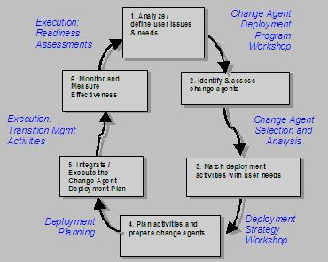

| Guideline: Change Agent Deployment (PSI) |
 |
|
Description This guideline provides overview information regarding Change Agent Deployment during Packaged Solution Implementation projects. The normal reaction to change during package implementations is resistance. If not identified and resolved, this resistance can be disastrous to ERP, SCM and CRM implementations. The most efficient way to reduce resistance is to involve and inform people as much as possible. (This is one way of increasing broad-based participation, one of IBM's eight critical success factors for managing change.) The issues and interests of the affected people or groups (stakeholders) must be considered and activities planned to support them through the change. Key change agents must be identified who can act as role models for change and execute transition management and organization transition activities both during and after the implementation. IBM’s Change Agent Deployment Program provides a series of integrated activities for preparing and involving change agents to address stakeholder issues and concerns. It is designed to increase the likelihood of success for a project by involving key people or groups in the change and planning specific activities to support them through the change. Context
The IBM approach to Change Agent Deployment consists of a series of workshops and other activities used to identify
stakeholders for the implementation effort, identify change agents who can effectively lead change for the identified
target communities, assess the needs of each of the target communities, identify activities required for change agents
to meet these needs, and provide management, monitoring, and measurement of effectiveness of the change deployment
activities. The changes created as a result of ERP, SCM and CRM implementations are successful only if they are effectively driven from within the organization. Broad-based participation and involvement from relevant staff at all levels of the organization is required for a smooth transition. If the issues and concerns of both internal and external stakeholder groups are not considered and supported, acceptance of the change will be limited, or delayed. This can cause delays in the implementation, or a disruption of performance after go-live so sever that benefits expected from the implementation are not realized in time to balance the time and effort invested in the project. Steps  Analyze / define user issues and needs The Change Agent Deployment Program is developed, reviewed, and adopted to clearly define objectives, roles, scope, and principles of engagement and participation. Key stakeholder groups impacted by the implementation are identified and segmented during the Change Agent Deployment Workshop. Stakeholder groups are analyzed based on their reactions to change and their level of involvement. The Change Agent Deployment Program Workshop is used to define and analyze user needs. This workshop is conducted as early as possible in the implementation effort. Typically the role-mapping method is the vehicle used to facilitate this process. Initially conducted as a series of meetings with the organization change team, a draft role map is developed which identifies the implementation targets, change agents, and change sponsors. The draft role map is presented to the steering committee, project management, and project team leads for confirmation. After implementation targets and change agents are identified and agreed, specific change needs for each target community are identified. Identify and assess change agents High-level stakeholder objectives and needs are documented and potential change agents selected who have the span of influence and direct involvement needed to support the stakeholder groups. Expected roles and responsibilities are presented and accepted. Critical capabilities of change agents are assessed. Change agent structure and governance is adopted. Feedback mechanisms are defined and accepted. Following confirmation of the draft role map, it is necessary to review the change agents identified for each of the target communities. The role mapping process identifies those individuals as change agents who provide guidance or influence to a target community. During the analysis process, it is necessary to determine if the change agents identified are likely to be supportive of the change required to successfully implement the package solution. In many cases, some initial change agents are not likely to provide needed support. In these cases alternate change agents must be identified. Match deployment activities with user needs Deployment activities to meet stakeholder needs and objectives are defined based on information gathered from the project team, visioning sessions, readiness and sponsorship interviews and the Change Agent Deployment Workshop. Budget and resource requirements and geographic coverage requirements are documented. The change agent structure, roles and responsibilities and recommended deployment activities are documented in the Change Agent Deployment Strategy. Once change agents have been identified and confirmed, the Deployment Strategy Workshop is conducted with project management, project team leads, and representatives from the business for implementation target communities. This workshop is used to define the strategy which will be used to effectively lead change at the grassroots level for the package implementation effort. Plan activities and prepare change agents The OCM team leads work with the implementation project manager and appropriate sponsors to align the change agent deployment activities and budget and resource requirements with the master timeline and implementation plan. Ownership for change agent deployment activities are assigned and scheduled as a part of the Change Agent Deployment Plan. Once the deployment strategy has been developed, the deployment plan is developed to guide change agent activities. These activities are as detailed as required to provide guidance to change agents. However, it is typically better to provide change agents with activities at a level of detail which will enable them to understand specifically what is required and how they will be able to achieve it. Concurrent with the development of the deployment plan, it is beneficial to develop the presentation that will be used to prepare change agents. This presentation, tailored to specific client needs, should explain to change agents why they were chosen and what is expected of them. It is important than change agents understand that they will be critical in the success of the implementation effort. As change agents, they will be required to lead the change in their respective communities, demonstrating their commitment to and support of the implementation effort. Integrate / execute the change agent deployment plan Change Agent Deployment Plan Execution is the ongoing process of monitoring, measuring and optimizing the Change Agent Deployment Plan as needed. Activities identified as elements of the change agent deployment plan are incorporated into the overall transition management plan. Execution of change agent deployment plan activities are reported and tracked against this transition management plan. Monitor and measure effectiveness Targeted feedback assessments are conducted and analyzed to determine the effectiveness of the change agents and the deployment activities. Adjustments are made to the plan based on the feedback results.
The most effective way to monitor and measure is through the organization change readiness assessment. To best use this
tool, an early change readiness assessment must be conducted to establish baseline data. Subsequent change readiness
assessment conducted with the target community will reveal the effectiveness of the change agent deployment program.
Data gathered during these subsequent change readiness assessments is used adjust the change agent deployment
program. |
| Supporting Materials |
|---|
| © Copyright IBM Corp. 1987, 2012 All Rights Reserved Property of IBM These materials are intended only for use as part of an IBM engagement |